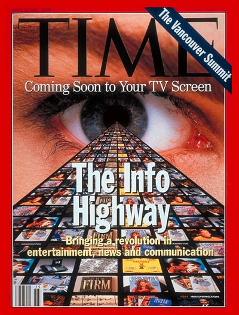

—— "With each revolution, well-paid or relatively well-paid jobs in the global North have become less well-paid ones elsewhere, from programming to data entry to circuit building. As the philosopher Georg Wilhelm Friedrich Hegel pointed out centuries ago, the greater the apparent mastery, the greater the actual dependence: in the master-slave dialectic, the masters’ very identities and lives depend on their slaves’ actions."
—— "As the philosopher Georg Wilhelm Friedrich Hegel pointed out centuries ago, the greater the apparent mastery, the greater the actual dependence: in the master-slave dialectic, the masters’ very identities and lives depend on their slaves’ actions. "
—— "From the Uber driver being nudged to the undocumented immigrant being tracked to the public housing tenants contending with facial recognition systems in their homes, AI systems are built with the logics of capital, policing, and militarization—and this combination further widens the existing asymmetries of power."
—— “MIT professor Marvin Minsky once responded to the question of whether machines could think by saying, “Of course machines can think; we can think and we are ‘meat machines.’” But not everyone was convinced” (...) “Hans was already performing remarkable feats of interspecies communication, public performance, and considerable patience, yet these were not recognized as intelligence”
—— “But Barlow’s “we” erased so many people —not only researchers within the U.S. military-academic complex who had built the infrastructure and were theearliest users, but also people of color who, as Anna Everett has shown, were on the early Internet and who were celebrating it not as a “race-free” zone, but rather as a space for cultural and political community.”
—— “As Lanier told Kulwin in the full interview: “We run everything. We are the conduit of everything else happening in the world. We’ve disrupted absolutely everything. Politics, finance, education, media, relationships—family relationships, romantic relationships—we’ve put ourselves in the middle of everything, we’ve absolutely won.” The problem, though, is that “we” don’t act as if “we” have won—“we” refuse to take responsibility for “our” actions because, in “our” view, “we” are still idealistic underdogs."
—— “In fact, artificial intelligence as we know it depends entirely on a much wider set of political and social structures. And due to the capital required to build AI at scale and the ways of seeing that it optimizes AI systems are ultimately designed to serve existing dominant interests. In this sense, artificial intelligence is a registry of power.”
—— “To understand how AI is fundamentally political, we need to go beyond neural nets and statistical pattern recognition to instead ask what is being optimized, and for whom, and who gets to decide.”
—— “By tracking user clicks and mouseovers, advertisers could “measure” engagement, and thus overcome what social theorist Jean Baudrillard had presciently and perversely called the “silent power of the majority.” To optimize performance, platforms encouraged advertisers to amalgamate related but bespoke microaudiences, that is, to create a crowd of users by consolidating rhyming groups.”
—— “Soon, the actual product no longer mattered, for monetized user clicks generated their own wealth: outrage—or anything that piqued curiosity—had become profitable. Most infamously, hackers from Moldova produced right- and left-wing fake political news during the 2016 U.S elections in order to profit from a combination of Facebook click throughs and Google ad auctions.”
—— "So . . . if these algorithms do not include race as a category, how can they be racist? Most obviously, these programs may not explicitly use racial categories, but they do so implicitly through their use of proxies, such as zip codes.”
—— "The problem stems from the libraries on which these algorithms have been traditionally trained: the “ground truth” for these programs are the faces of Hollywood celebrities and university undergraduates, those well-known hotspots of diversity. At a fundamental level, this “curation” means that ground truth = deep fake.”
—— “By looking at how classifications are made, we see how technical schemas enforce hierarchies and magnify inequity. Machine learning presents us with a regime of normative reasoning that, when in the ascendant, takes shape as a powerful governing rationality.”
—— “There are gigantic datasets full of people’s selfies, of hand gestures, of people driving cars, of babies crying, of newsgroup conversations from the 1990s, all to improve algorithms that perform such functions as facial recognition, language prediction, and object detection. When these collections of data are no longer seen as people’s personal material but merely as infrastructure, the specific meaning or context of an image or a video is assumed to be irrelevant.”
—— "This special property of digital computers, that they can mimic any discrete state machine, is described by saying that they are universal machines. The existence of machines with this property has the important consequence that, considerations of speed apart, it is unnecessary to design various new machines to do various computing processes. They can all be done with one digital computer, suitably programmed for each case. It will be seen that as a consequence of this all digital computers are in a sense equivalent.”
—— "Whatever type of server, the user interface is the same, so users do not need to understand the differences between the many protocols in common use. Before W3, access to networked information typically involved knowledge of many different access “recipes” for different systems, and a different command language for each."
—— "The Web was designed so that if it was used independently for two projects, and later relationships were found between the projects, then no major or centralized changes would have to be made, but the information could smoothly reshape to represent the new state of knowledge. This property of scaling has allowed the Web to expand rapidly from its origins at CERN across the Internet irrespective of boundaries of nations or disciplines."
—— "We have mentioned that the “book of rules” supplied to the computer is replaced in the machine by a part of the store. It is then called the “table of instructions.” It is the duty of the control to see that these instructions are obeyed correctly and in the right order.”
—— "Instructions of these latter types are very important because they make it possible for a sequence of operations to be repeated over and over again until some condition is fulfilled, but in doing so to obey, not fresh instructions on each repetition, but the same ones over and over again.”
—— "When it starts, it displays an object, normally a document with text and possibly images. Some of the phrases and images are highlighted: in blue, or boxed, or perhaps numbered, depending on what sort of a display you have and how your preferences have been set. Clicking the mouse on the highlighted area (“anchor”) causes the client program to retrieve another object from some other computer, a “server.” The retrieved object is normally also in a hypertext format, so the process of navigation continues. "
—— "Most actual digital computers have only a finite store. There is no theoretical difficulty in the idea of a computer with an unlimited store. Of course only a finite part can have been used at any one time. Likewise only a finite amount can have been constructed, but we can imagine more and more being added as required. ”
—— "I believe that in about fifty years’ time it will be possible to programme computers with a storage capacity of about 109 to make them play the imitation game so well that an average interrogator will not have more than 70 per cent. chance of making the right identification after five minutes of questioning. The original question, “Can machines think?” I believe to be too meaningless to deserve discussion.”
—— "While gopher space is in fact a web containing many loops, the menu system gives the user the impression of a tree. The Veronica server provides a master index for gopher space. The W3 data model is similar to the gopher model, except that menus are generalized to hypertext documents. In both cases, simple file servers generate the menus or hypertext directly from the file structure of a server. The W3 hypertext model gives the program more power to communicate the options available to the reader, as it can include headings and various forms of list structure, for example, within the hypertext. "
—— "The explanation of the paradox (about the idea of a learning machine) is that the rules which get changed in the learning process are of a rather less pretentious kind, claiming only an ephemeral validity. The reader may draw a parallel with the Constitution of the United States.”
—— "The “skin of an onion” analogy is also helpful. In considering the functions of the mind or the brain we find certain operations which we can explain in purely mechanical terms. This we say does not correspond to the real mind: it is a sort of skin which we must strip off if we are to find the real mind. But then in what remains we find a further skin to be stripped off, and so on.”
—— "To achieve this, the client sends a (weighted) list of the formats it can handle, and the server replies with data in any of those formats that it can produce. This allows proprietary formats to be used between consenting programs in private, without the need for standardization of those formats. This is important both for high-end users who share data in sophisticated forms, and also as a hook for formats that have yet to be invented."
—— "We may hope that machines will eventually compete with men in all purely intellectual fields. But which are the best ones to start with? Even this is a difficult decision. Many people think that a very abstract activity, like the playing of chess would be best. It can also be maintained that it is best to provide the machine with the best sense organs that money can buy, and then teach it to understand and speak English. This process could follow the normal teaching of a child."
—— "The Web does not yet meet its design goal as being a pool of knowledge that is as easy to update as to read. That level of immediacy of knowledge sharing waits for easy-to-use hypertext editors to be generally available on most platforms. Most information has in fact passed through publishers or system managers of one sort or another."